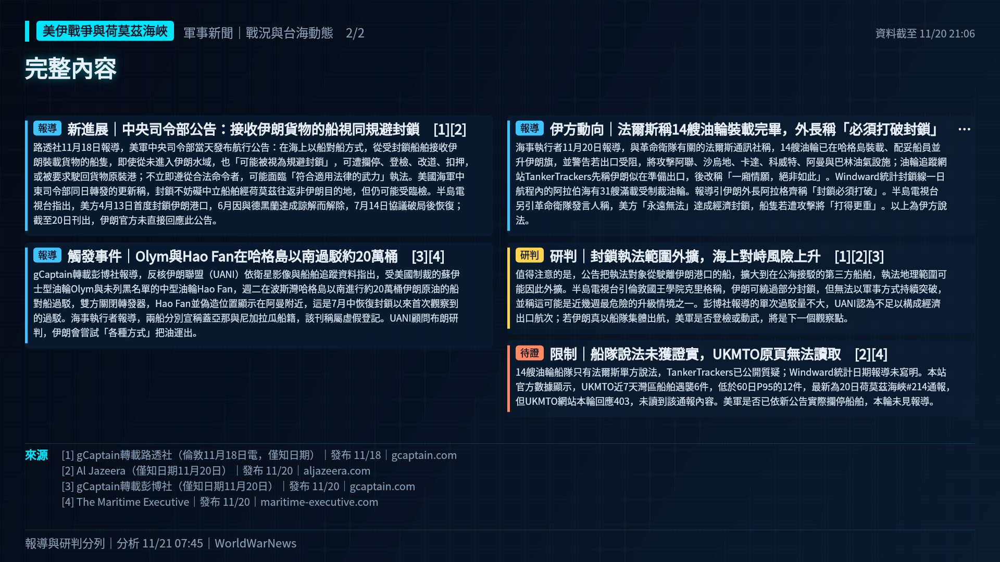

美軍將封鎖擴及海上船對船轉運、可登檢扣押甚至動武：哈格島以南出現封鎖恢復後首次伊朗原油過駁，法爾斯通訊社稱14艘油輪待命突破


報導新進展｜中央司令部公告：接收伊朗貨物的船視同規避封鎖
路透社11月18日報導，美軍中央司令部當天發布航行公告：在海上以船對船方式，從受封鎖船舶接收伊朗裝載貨物的船隻，即使從未進入伊朗水域，也「可能被視為規避封鎖」，可遭攔停、登檢、改道、扣押，或被要求駛回貨物原裝港；不立即遵從合法命令者，可能面臨「符合適用法律的武力」執法。美國海軍中東司令部同日轉發的更新稱，封鎖不妨礙中立船舶經荷莫茲往返非伊朗目的地，但仍可能受臨檢。半島電視台指出，美方4月13日首度封鎖伊朗港口，6月因與德黑蘭達成諒解而解除，7月14日協議破局後恢復；截至20日刊出，伊朗官方未直接回應此公告。
報導觸發事件｜Olym與Hao Fan在哈格島以南過駁約20萬桶
gCaptain轉載彭博社報導，反核伊朗聯盟（UANI）依衛星影像與船舶追蹤資料指出，受美國制裁的蘇伊士型油輪Olym與未列黑名單的中型油輪Hao Fan，週二在波斯灣哈格島以南進行約20萬桶伊朗原油的船對船過駁，雙方關閉轉發器，Hao Fan並偽造位置顯示在阿曼附近，這是7月中恢復封鎖以來首次觀察到的過駁。海事執行者報導，兩船分別宣稱蓋亞那與尼加拉瓜船籍，該刊稱屬虛假登記。UANI顧問布朗研判，伊朗會嘗試「各種方式」把油運出。
報導伊方動向｜法爾斯稱14艘油輪裝載完畢，外長稱「必須打破封鎖」
海事執行者11月20日報導，與革命衛隊有關的法爾斯通訊社稱，14艘油輪已在哈格島裝載、配妥船員並升伊朗旗，並警告若出口受阻，將攻擊阿聯、沙烏地、卡達、科威特、阿曼與巴林油氣設施；油輪追蹤網站TankerTrackers先稱伊朗似在準備出口，後改稱「一廂情願，絕非如此」。Windward統計封鎖線一日航程內的阿拉伯海有31艘滿載受制裁油輪。報導引伊朗外長阿拉格齊稱「封鎖必須打破」。半島電視台另引革命衛隊發言人稱，美方「永遠無法」達成經濟封鎖，船隻若遭攻擊將「打得更重」。以上為伊方說法。
研判研判｜封鎖執法範圍外擴，海上對峙風險上升
值得注意的是，公告把執法對象從駛離伊朗港口的船，擴大到在公海接駁的第三方船舶，執法地理範圍可能因此外擴。半島電視台引倫敦國王學院克里格稱，伊朗可繞過部分封鎖，但無法以軍事方式持續突破，並稱這可能是近幾週最危險的升級情境之一。彭博社報導的單次過駁量不大，UANI認為不足以構成經濟出口航次；若伊朗真以船隊集體出航，美軍是否登檢或動武，將是下一個觀察點。
待證限制｜船隊說法未獲證實，UKMTO原頁無法讀取
14艘油輪船隊只有法爾斯單方說法，TankerTrackers已公開質疑；Windward統計日期報導未寫明。本站官方數據顯示，UKMTO近7天灣區船舶遇襲6件，低於60日P95的12件，最新為20日荷莫茲海峽#214通報，但UKMTO網站本輪回應403，未讀到該通報內容。美軍是否已依新公告實際攔停船舶，本輪未見報導。
- [1] gCaptain轉載路透社（倫敦11月18日電，僅知日期）｜發布 11/18
- [2] Al Jazeera（僅知日期11月20日）｜發布 11/20
- [3] gCaptain轉載彭博社（僅知日期11月20日）｜發布 11/20
- [4] The Maritime Executive｜發布 11/20